Changelog for QGIS 3.26¶
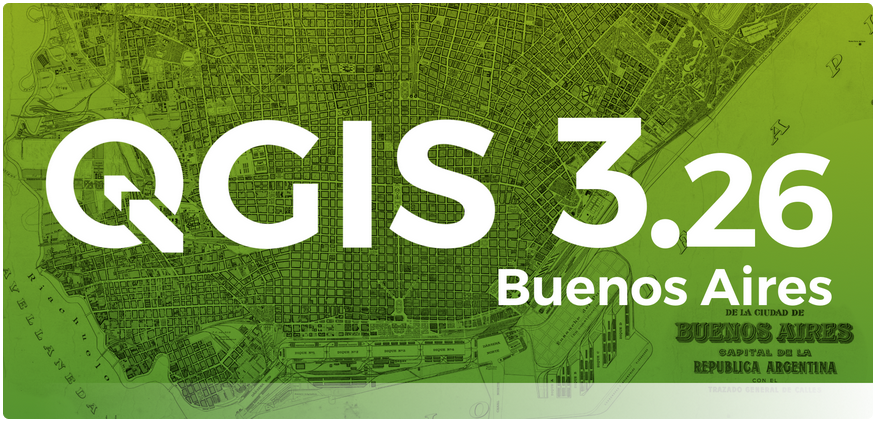
The feature-packed release of QGIS 3.26 Buenos Aires includes a vast number of enhancements to a range of advanced core functionalities. This includes numerous improvements to 3D capabilities, improved tooling for point clouds, and the introduction of a new profile plotting framework for the creation of cross-sections and elevation profiles. Best of all, the new plotting framework uses the native QGIS rendering capabilities and comes with all the styling, symbology, and data driven properties we all know and love baked right in!
For a whirlwind tour of all the new functionalities introduced, you can view the highlight reel video on YouTube at https://youtu.be/pZmrw_zR7sA
The QGIS Community has also been active in various crowd-funding campaigns, Open Day events, and the growth of the STAC Ecosystem has led to inter-agency collaboration initiatives which include outcomes such as the STAC Browser QGIS Plugin, which make it nearly trivial to produce Raster Mosaics from Earth Observation data using Open Source and Open Data. There is also a new online analytics dashboard which collects information from the QGIS Feed in an attempt to show how and where QGIS is being used, providing valuable insight to developers and the QGIS community.
We would also like to extend a big thank you to the developers, documenters, testers, and the many folks out there who volunteer their time and effort (or fund people to do so) to make these releases possible. From the QGIS community, we hope you enjoy this release! If you wish to donate time, money, or otherwise get involved in making QGIS more awesome, please wander along to QGIS.ORG and lend a hand!
QGIS is supported by donors and sustaining members. A current list of donors who have made financial contributions large and small to the project can be seen on our list of donors. If you would like to become an official project sustaining member, please visit our sustaining member page for details. Sponsoring QGIS helps us to fund our regular developer meetings, maintain project infrastructure, and fund bug fixing efforts. A complete list of current sponsors is provided below - our very great thank you to all of our sponsors!
QGIS is free software and you are under no obligation to pay anything to use it - in fact, we want to encourage people far and wide to use it regardless of what their financial or social status is - we believe that empowering people with spatial decision-making tools will result in a better society for all of humanity.
Breaking Changes¶
Feature: DB2 Support Removed¶
The DB2 provider has been marked deprecated and hidden from the QGIS UI for a number of releases. As no maintainers have come forward to support the maintenance of this data provider, it has been removed and will no longer be available for use in QGIS.
Map Tools¶
Feature: Selecting all features by attribute value from Identify Results panel¶
The identify results tools now provides an option available from the context menu of an attribute field value which allows for the quick selection of all features in that layer with matching values to be selected.

This feature was funded by Camptocamp
This feature was developed by Ismail Sunni
User Interface¶
Feature: Coordinate ordering according to CRS¶
QGIS will now use the correct coordinate ordering for the project CRS when displaying coordinates in status bar (and identify results). A setting has been added in the project properties to allow users to override this with a specific coordinate ordering if desired (x/y or y/x).
Specifically, this means that projects in geographic CRS like EPSG:4326 will now show coordinates in latitude/longitude order instead of longitude/latitude (unless the specific CRS has different native ordering).

This feature was funded by SevenCs GmbH
This feature was developed by Nyall Dawson (North Road Consulting)
Feature: Select features from expression based symbols¶
A “Select Features” action has been added to the right click context menu on legend class symbols. This allows you to rapidly select all features within a layer that match the associated symbol class in categorized, graduated, and rule based renderers.
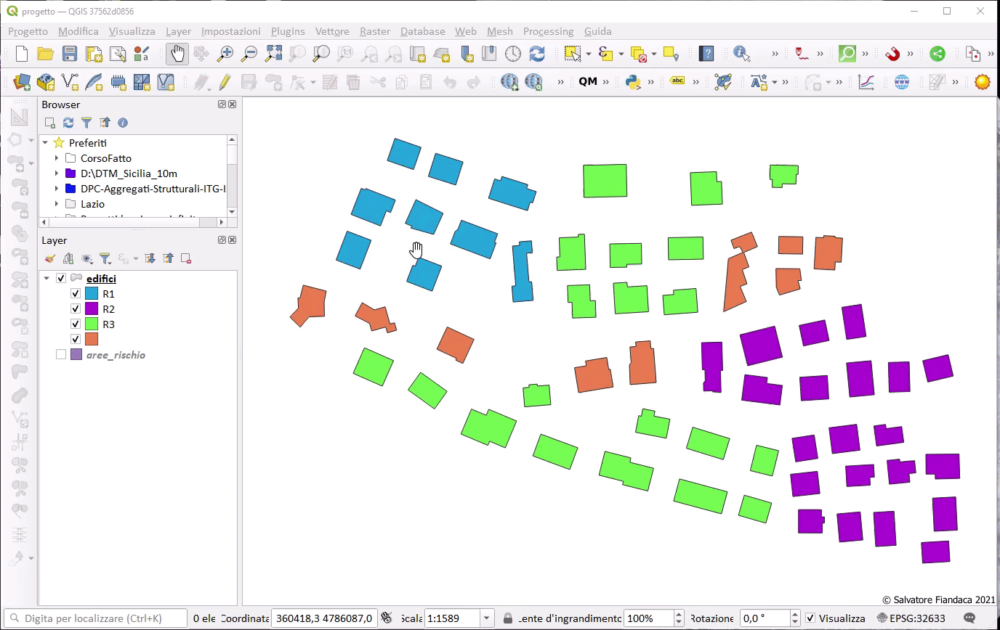
This feature was funded by City of Canning
This feature was developed by Nyall Dawson (North Road Consulting)
Feature: Copy preview expression value to clipboard¶
A new button has been added to the expression builder interface which allows the copying of the value in the expression preview field to the clipboard.

This feature was funded by Camptocamp
This feature was developed by Ismail Sunni
Feature: Option to synchronize statistics panel with layer selection¶
A “Keep synchronized with TOC” checkbox has been added to the statistics panel, which allows the statistics panel to automatically synchronize with the table of contents layer list, ensuring that the active layer is selected for the computed statistics displayed in the statistics panel.
The most recently defined expression used for defining the statistics calculation on a layer will be retained for each layer independently.

This feature was developed by Jacky Volpes
Accessibility¶
Feature: Horizontal table scroll with shift+wheel¶
Attribute tables can now be scrolled horizontally using the key combination of Shift+ Mouse wheel, switching from the default vertical scroll operation.
This matches the behavior exposed by LibreOffice, and provides a convenient way to quickly horizontally scroll tables when a mouse doesn’t have a dedicated horizontal scroll wheel.

This feature was funded by the City of Canning
This feature was developed by Nyall Dawson (North Road Consulting)
Symbology¶
Feature: New “Animated Marker” symbol type¶
A new marker symbol type allows points to be rendered using an animated marker, sourced from an animated gif, webp or mng animation. Options are present for marker file, size, angle and frame rate.
There are two ways in which animated symbols are handled.
If the map is NOT considered an animation (i.e. a regular QGIS project), then the frame to render will be based on the current timestamp alone.
If the map itself is considered an animation, then the frame rendered for the animated marker is based on the map animation frame and frame rate. This is the case when the temporal controller is set to the Animation mode. In this case, the animated markers will follow the temporal controller animation, e.g. pausing when the animation is paused, advancing frames with the animation, etc. This mode also applies when exporting an animation from the temporal controller and is used when a plugin specifically sets the frame rate and current frame properties.

This feature was funded by North Road Consulting
This feature was developed by Nyall Dawson (North Road Consulting)
Feature: Allow any symbol to be an animated symbol¶
Users can now indicate that a symbol should be treated as an animated symbol, through the new “Animation Settings” option in the symbol widget’s Advanced menu.
This settings panel allows users to enable animation for the symbol and set a specific frame rate at which the symbol should be redrawn. When enabled, the @symbol_frame variable can be used in any symbol data defined property in order to animate that property.
For instance, setting the symbol’s rotation to the following data defined expression will cause the symbol to rotate over time, with rotation speed dictated by the symbol’s refresh rate.
@symbol_frame % 360

This feature was funded by North Road Consulting
This feature was developed by Nyall Dawson (North Road Consulting)
Feature: Add a new classification method for “Fixed interval”¶
Allows users to create graduated breaks using a specific interval width for classes (instead of the total number of classes).

This feature was funded by SLYR
This feature was developed by Nyall Dawson (North Road Consulting)
Feature: Custom dash pattern panel shows total pattern length¶
The custom dash pattern panel now displays the total dash pattern length, enhancing the ability for users to match the overall pattern length with sizes from other parts of a symbol.

This feature was funded by North Road Consulting
This feature was developed by Nyall Dawson (North Road Consulting)
Feature: Select style categories when storing styles in database¶
QGIS supports the storing of layer styles in the source database, or in the local style database. QGIS then provides the ability to use those styles as the default style for a layer, or provide access to the style via the style manager.
In prior releases of QGIS, this process stored all available style categories in the database, however new functionality allows users to select which specific style categories should be stored, providing a similar level of flexibility for storing styles in database sources as was previously available only for the QML and SLD style formats.
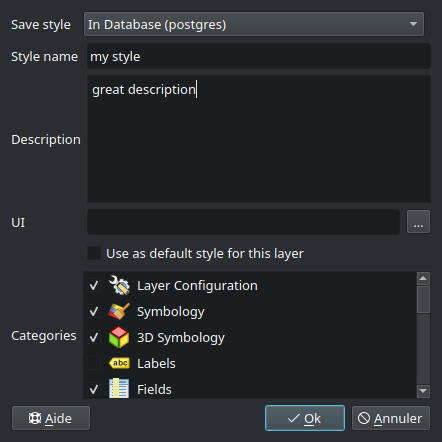
This feature was developed by Jacky Volpes
Labelling¶
Feature: Allow data-defined control over line anchor type¶
Allows data-defined control over whether the ‘hint’ or ‘strict’ anchoring type is used.
This feature was funded by City of Freiburg im Breisgau
This feature was developed by Nyall Dawson (North Road Consulting)
Feature: Control label anchor placement relative to text position¶
A control is now provided for defining what part of the text (start, middle, or end) of line labels correspond to the anchor position defined in label placement. This allows for more precise placement of labels according to specific requirements, such as lining up the end of a labels text with a specific point on a line feature.
In prior releases of QGIS, labels would always be centered over the anchor position of lines, unless it was a curved label, which used the start of the label for determining the anchor orientation.
A new option for “Follow placement” has also been added, which means that the text anchor will depend on the placement along line setting. This control attempts to determine the appropriate alignment option automatically according to the label placement on the feature and exhibits the following behaviors:
For labels anchored near the start of the line (0-25%), the anchor placement will be the start of the label text
For labels anchored near the end of the line (75-100%), the anchor placement will be the end of the label text
For anchor placements between 25 and 75%, the anchor placement will be the center of the label text
This feature was funded by City of Freiburg im Breisgau
This feature was developed by Nyall Dawson (North Road Consulting)
Feature: Interactively move curved line labels along their line features¶
Placement of curved label text can now be manipulated by using the interactive “Move Labels” tool.
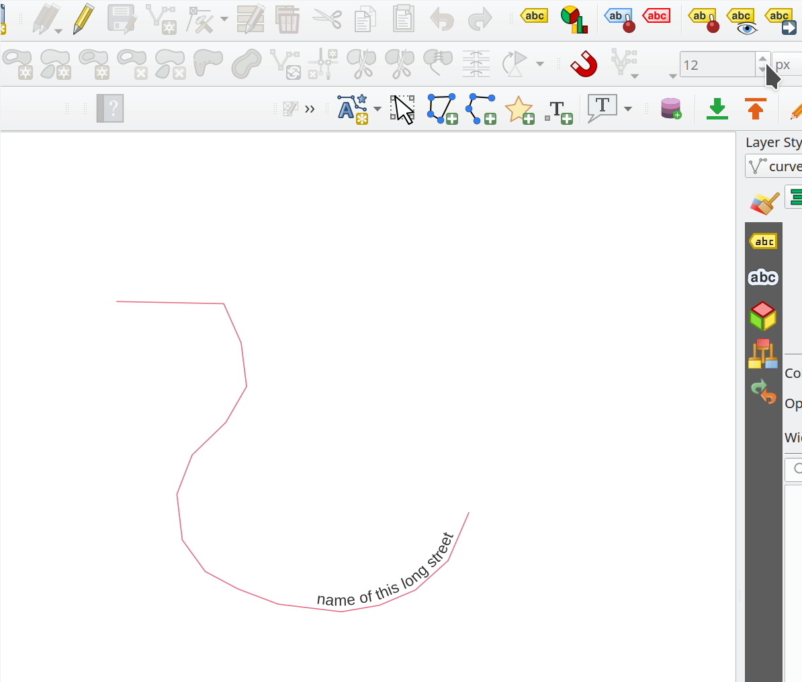
This feature was funded by City of Freiburg im Breisgau
This feature was developed by Alessandro Pasotti
Rendering¶
Feature: WMS provider resampling¶
Following the ability of QGIS 3.24 to convert WMS raster tiles to elevation data, QGIS has further been enhanced to include various resampling methods to reduce rendering artifacts in WMS DEM sources, such as pixelation encountered with hillshade rendering.
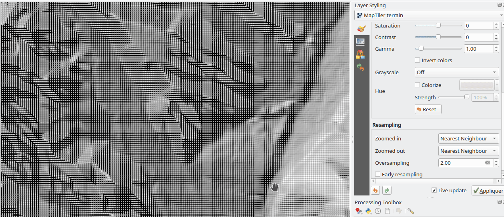
This feature was funded by Maptiler
This feature was developed by Lutra Consulting (Vincent Cloarec)
Feature: Selective masking vectorization¶
QGIS introduced a selective masking feature in version 3.12, however the implementation relied on the rasterization of the map products and made it unsuitable for some cartographic work.
This long awaited feature implements selective masking in a way that vectorizes appropriate masked or clipped features wherever possible, allowing high quality vector outputs for SVG and PDF maps which use the masking features of QGIS.
This is implemented in line with QEP 186.

This feature was developed by Julien Cabieces
3D Features¶
Feature: Transparency support for 3D Phong material¶
Provides support for rendering semi transparent objects in 3D. An opacity slider is provided for the phong material widget, which defaults to 100% (fully opaque).

This feature was funded by Swedish QGIS user group.
This feature was developed by Lutra Consulting (Nedjima Belgacem)
Feature: 3D Maps inherit terrain settings from project¶
When a new 3D map is created in the project, the map will default to using the same terrain settings as are defined for the project. This makes it easier to create and destroy 3D maps, without having to re-setup their terrain settings each time.
This feature was funded by Crowdfunding for raster and point clouds improvements
This feature was developed by Nyall Dawson (North Road Consulting)
Feature: Sync 2D and 3D navigation¶
A new “Navigation sync” setting for 3D map frames provides the ability to automatically synchronize the 2D main map canvas extent and the 3D viewport based on various navigation options.
Option 1: Whenever the camera is moved in the 3D view, the main map (2D) canvas extent will be set to the viewed area
Option 2: Every change in position on the main map canvas (2D) will result in the 3D camera orientation being shifted to view approximately the same extent from the top (Nadir view position)
Option 3: A trapezoid area representing the field of view from the 3D map frame will be drawn on the main map (2D) canvas
Actions are also available for quickly turning these options on and off.

This feature was funded by Crowdfunding for raster and point clouds improvements
This feature was developed by Lutra Consulting (Nedjima Belgacem)
Feature: 3D axis in 3D map viewer¶
A 3D axis annotation has been added to the 3D map viewer allowing users to better orient their view with their data.
This various additional includes controls and options for:
Displaying axis for X/Y/Z or using North/East/South/West based on the frame coordinate reference system (CRS)
Displaying a face-labeled cube instead of typical axis arrows
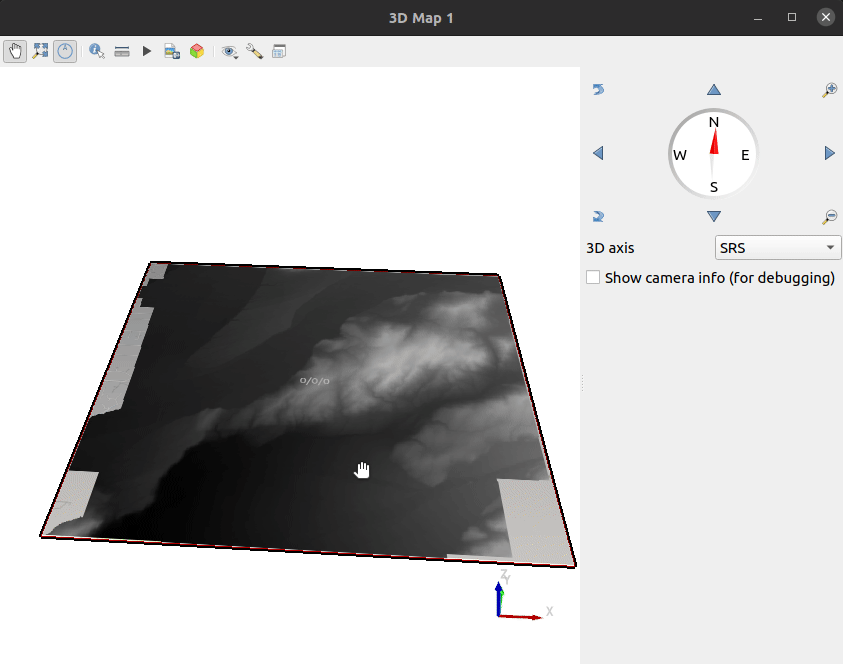
This feature was developed by benoitdm-oslandia
Point Clouds¶
Feature: Point cloud triangulation in 3D views¶
QGIS can now render point cloud layers in the 3D view as a solid surface, which is obtained by 2.5D triangulation.
Triangulation is configured using a checkbox in the 3D styling options, and configuration options allow exclusion of triangles which surpass user defined thresholds for width or height.
This triangulation is available for all the 3D point cloud renderer styles, including unique color, ramp color, classification, and RGB.
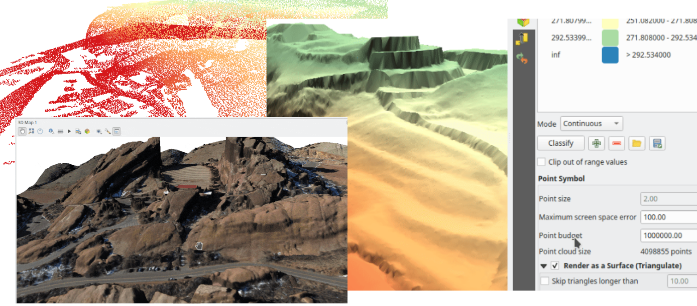
This feature was developed by Vincent Cloarec
Feature: Cloud Optimized Point Clouds (COPC) support¶
QGIS now provides support for reading Cloud Optimized Point Clouds from local and remote data sources.
For more information on the COPC format, visit https://copc.io/.
This feature was funded by Crowdfunding for raster and point clouds improvements
This feature was developed by Lutra Consulting (Nedjima Belgacem)
Feature: Point cloud filtering¶
Filtering support has been added for point cloud layers, including a graphical query tool. Using filter expressions, point cloud points on both 2d and 3d canvases may be conditionally displayed based on xyz and/or LAS attributes.
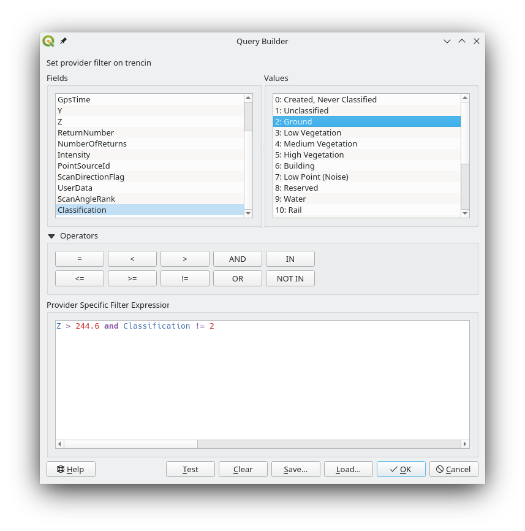
This feature was funded by Crowdfunding for raster and point clouds improvements
This feature was developed by Lutra Consulting (Stefanos Natsis)
Feature: Point cloud style synchronization¶
A new “Follow 2d renderer” style for 3D point cloud symbology allows for a point cloud layer’s 3D symbol to be kept in sync with its 2D counterpart. Any changes to the 2D symbology will be automatically applied to the 3D symbology.
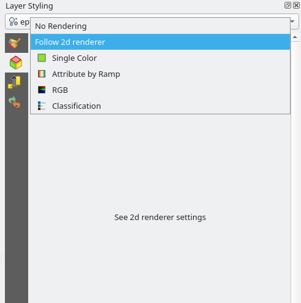
This feature was funded by Crowdfunding for raster and point clouds improvements
This feature was developed by Lutra Consulting (Stefanos Natsis)
Feature: Improvements to the classified renderer¶
Classified renderer for point clouds has been improved to:
Show only classes that are in the dataset (instead of hard-coded list) & show also non-standard classes
Show percentage of points for each class
Work also for other attributes (return number, number of returns, point source and few other classes)
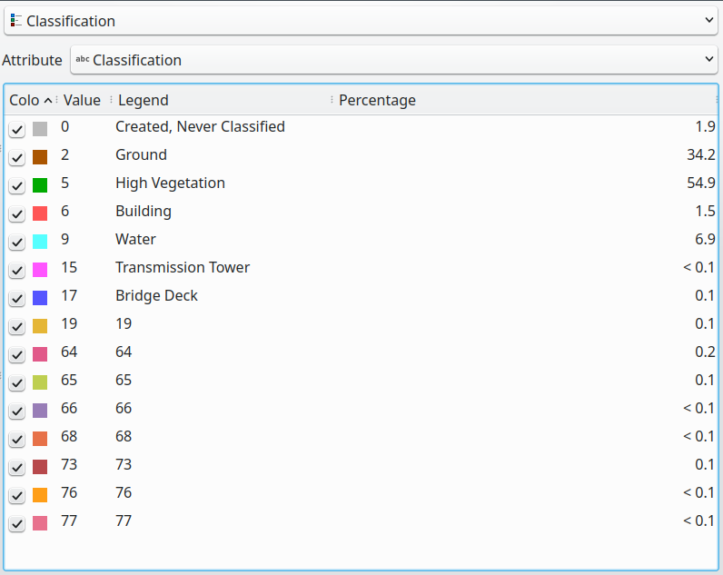
This feature was funded by Crowdfunding for raster and point clouds improvements
This feature was developed by Lutra Consulting (Stefanos Natsis)
Print Layouts¶
Feature: Apply font settings from layer conditional styling to layout attribute tables¶
Previously, only the font color and background color settings from the conditional styling rules were applied to attribute tables in layouts. Additional styling settings such as font family, bold, italic, strikeout, and underline are now applied from conditional rules.

This feature was funded by City of Canning
This feature was developed by Nyall Dawson (North Road Consulting)
Feature: Scalebar Data Defined Overrides¶
Adds data defined overrides to the Scalebar layout item. This feature is useful when generating an atlas with the atlas feature containing the scale as a field. The map can be driven by this value, but the scalebar cannot. This implements #48084, which allows the scalebar properties to be data driven by the atlas feature.
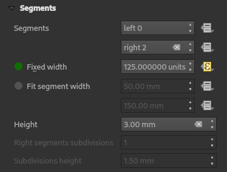
This feature was developed by Ethan Snyder
Expressions¶
Feature: Between/Not between operators¶
QGIS now includes support for SQL-like BETWEEN and NOT BETWEEN operators in expression clauses.

This feature was funded by Kanton Solothurn
This feature was developed by Alessandro Pasotti
Feature: Static parent variable in aggregate expression functions¶
In prior releases of QGIS, aggregate expressions did not pass the parent object parameters as static variables, preventing them from being executed by the data provider (e.g. PostgreSQL). This change will result in significant performance increases for a number of aggregate expressions. For example, in the aggregate expression:
IF(aggregate(layer:='parks',aggregate:='count', expression:= 't_id', filter:=intersects( $geometry, geometry(@parent))) < 1, 'FALSE', 'TRUE')
The execution of the intersects( $geometry, geometry(@parent)) filter will be performed on the data provider directly.
This feature was funded by Amt für Geoinformation Kanton Schaffhausen
This feature was developed by David Signer
Digitising¶
Feature: Add a checkbox to disable vertex tool dock auto-opening behavior¶
The vertex tool dock now has a new checkbox for “Auto-open table”, which is checked by default and retains the existing behavior.
If a user opts to uncheck this, then the vertex editor dock auto open/close behavior will be disabled, leaving the dock as regular QGIS dock which behaves the same as any other dock.
This is desirable in situations when:
The user is editing in a full screen session with docks hidden, and doesn’t want the vertex editor dock to keep opening itself
The user has a heavily customized setup of stacked/tabbed/rearranged docks, and doesn’t want the vertex editor dock to keep appearing and disappearing and causing other docks to be rearranged
If a user has opted out of the auto-open table behavior, then the dock can be closed and won’t show immediately when switching to the vertex tool. The dock can then be re-opened either through the standard Views - Panels menu (or by right clicking a toolbar), OR through a new “Show Vertex Editor” action which has been added to the dropdown menu for the vertex editor toolbar button.
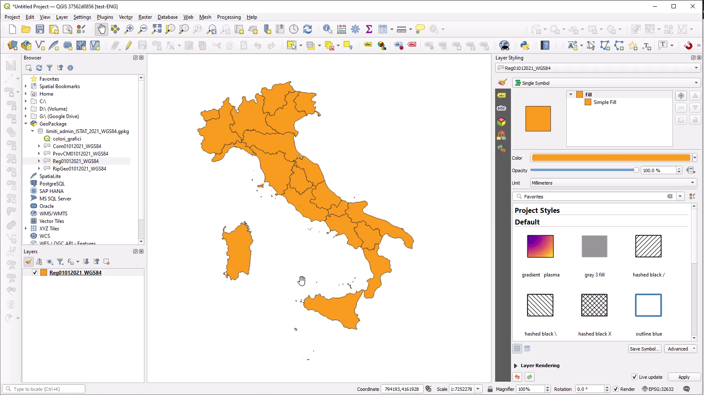
This feature was funded by SevenCs GmbH
This feature was developed by Nyall Dawson (North Road Consulting)
Feature: Integrate shape map tools into feature digitizing¶
The Shape Tools have been extended and integrated with the features from digitizing tools, allowing the use of map tools to use shapes for digitizing operations.
This includes digitizing support for items such as:
StraightSegments
CircularStrings
Streaming
Shapes
This results in the ability to use the add part, add ring, or any other digitizing operations with the shape tools for hybrid digitizing operations, for example using the circular string or rectangle shape tools to create rings in existing area features.
This required significant refactoring and the porting of code from QgsMapToolDigitizeFeature to QgsMapToolCapture.
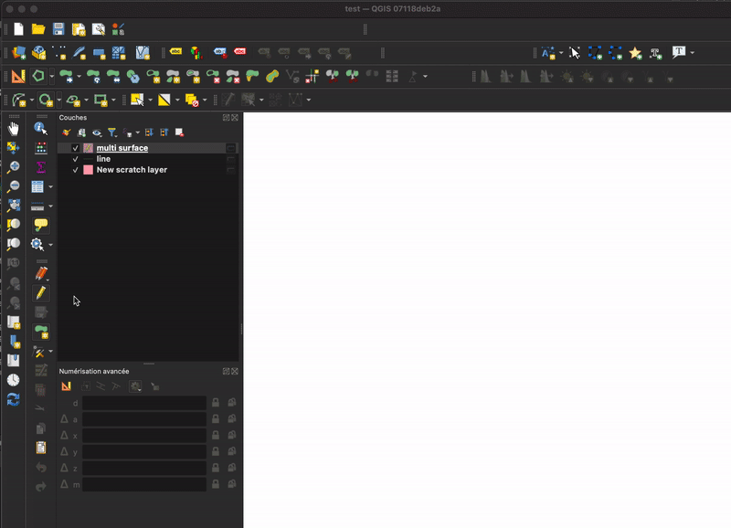
This feature was developed by Denis Rouzaud
Feature: New constraints for advanced digitizing panel¶
The advanced digitizing panel now includes two additional soft constraints (snapping guides) for allowing users to capture positions relative to existing features. These constraints are optionally enabled and include:
Line extension: QGIS will provide a constraint that traces the extension of a line, based on the segment orientation defined by the selected vertex
Xy vertex: QGIS will provide a constraint that runs perpendicular to an existing vertex in vertical or horizontal orientation.

This feature was funded by Métropole Européenne de Lille @Jean-Roc
This feature was developed by Antoine Facchini
Data Management¶
Feature: Add a “filter rules” search box to vector tile renderer and labeling widgets¶
Users may now filter the visible rules by a portion of their label, layer or filter strings. This can greatly help with finding rules in complex vector tile styles.
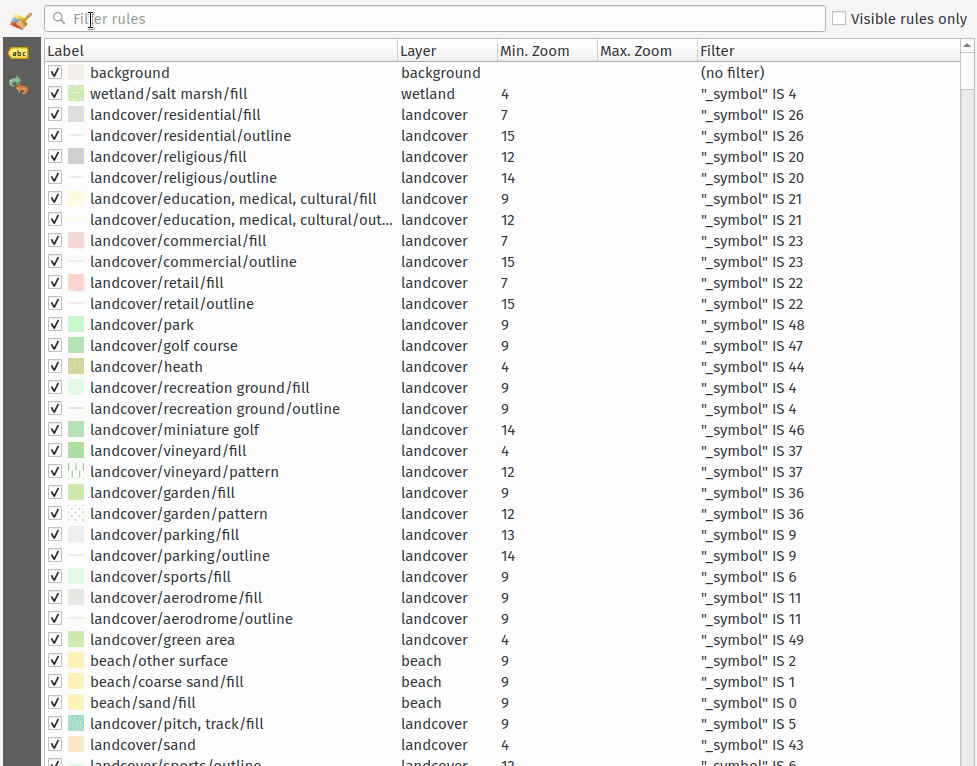
This feature was funded by North Road Consulting
This feature was developed by Nyall Dawson (North Road Consulting)
Feature: User defined field names in export¶
When exporting layers, users may now override the field names in the resulting layers.
The export dialog fields interface includes the following changes:
A new “Export names” column has been introduced to the fields table
A convenience checkbox is provided to automatically generate aliases, or revert to original field names
When field names are modified by the user, the checkbox will display a “PartiallyChecked” state indicator

This feature was funded by the Swiss QGIS User Group
This feature was developed by Damiano Lombardi
Feature: Georeferencing vector layers in georeferencer¶
QGIS now supports georeferencing vector layers in the georeferencer tool. This allows vector layers without spatial referencing to be interactively georeferenced, or layers with referencing to be re-referenced, in a similar manner to raster data. Georeferencing occurs in a task, so QGIS should remain responsive, even with large datasets.
Based on #41386
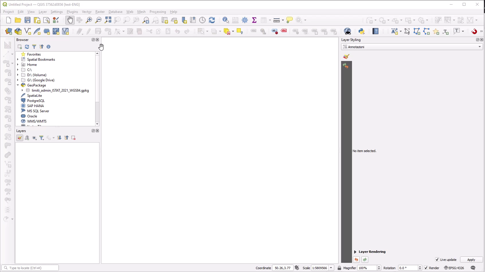
This feature was funded by the Danish QGIS Usergroup
This feature was developed by Nyall Dawson (North Road Consulting)
Feature: Add field domain management capabilities to browser¶
A new API has been added to manage field domains through database connections, and QGIS now exposes this functionality through the browser panel.
This functionality is currently exposed only for GeoPackages, but support for other providers could potentially be exposed in future.
Included in this functionality is the ability to create new field domains, as well as set the field domain for GeoPackage table fields.

This feature was funded by Provincie Gelderland
This feature was developed by Nyall Dawson (North Road Consulting)
Feature: Buffered Transactional Editing¶
With this edit mode, all editable layers are toggled synchronously and all edits are saved in a local edit buffer. Saving changes is executed within a single transaction on all layers (per provider).
This new edit mode attempts to provide a hybrid alternative for managing the data editing approaches used in the current editing modes, local edit buffers and transactional editing, and is implemented in line with QEP 203

This feature was funded by Kanton Glarus
This feature was developed by Damiano Lombardi
Forms and Widgets¶
Feature: Access form reference in python form actions¶
The form instance, or QgsAttributeForm object, has now been exposed to the Python API for Drag and drop form actions.
This means that QGIS users can now reference the current form and produce actions that change values within the form itself, such as resetting default values or quick actions for applying other user defined presets.
This implementation has been done in line with QEP 251

This feature was developed by Alessandro Pasotti
Feature: Allow drag and drop forms label font and color customization¶
The font and color of form labels and group or tabs titles can now be customized in the Drag & Drop from designer interface.

This feature was funded by ARPA Piemonte
This feature was developed by Alessandro Pasotti
Feature: Collapse form group by expression¶
New configuration options are now available for Drag & Drop form group boxes which allow specifying an expression to define whether a form group should be collapsed.
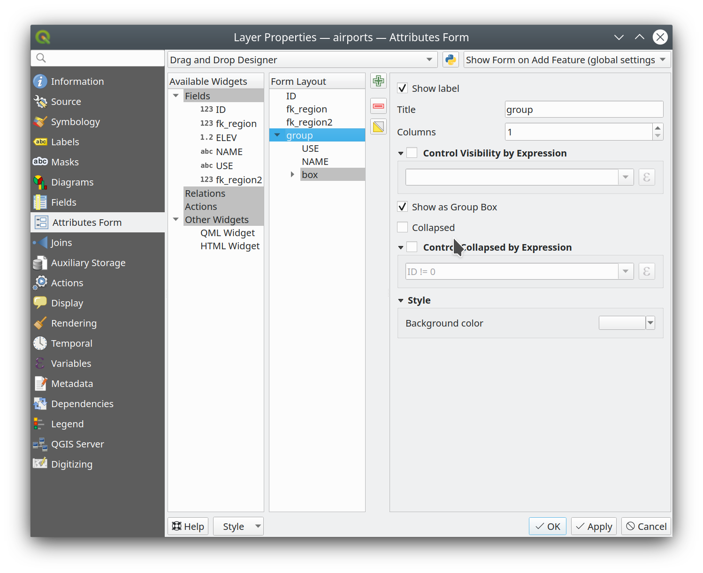
This feature was funded by ARPA Piemonte
This feature was developed by Alessandro Pasotti
Analysis Tools¶
Feature: “Keep disjoint features separate” option for dissolve algorithm¶
A “Keep disjoint features separate” option has been added for the dissolve algorithm which will cause features and parts that do not overlap or touch to be exported as separate features instead of parts of a single multipart feature. This makes it much simpler to perform simple aggregation based dissolves on a single class.

This feature was funded by City of Canning
This feature was developed by Nyall Dawson (North Road Consulting)
Processing¶
Feature: Raise message model tool¶
A raise message algorithm has been added to the model tools which allows users to output additional information in models logs. This prevents the abuse of the raise error/warning algorithms and provides more granular control of model logging levels.

This feature was developed by Mathieu Pellerin
Feature: Run batch processing steps in tasks¶
Individual steps from the batch processing dialog now run as a separate task whenever possible. Although individual steps are still run sequentially rather than parallel, this keeps the UI responsive, and permits responsive cancellation and progress reporting.
This feature was funded by NRCan Contract#3000739399
This feature was developed by Nyall Dawson (North Road Consulting)
Feature: Background processing of model algorithms¶
Previously, any graphical models designed in Processing would be forced to run on the main thread, and did not support background execution. QGIS now supports running model algorithms off the main thread so that they can safely be run in background tasks.
This feature was funded by NRCan Contract#3000739399
This feature was developed by Nyall Dawson (North Road Consulting)
Feature: Allow setting Examples in graphical model help¶
A new ‘Examples’ section has been added to the graphical model help editor dialog, allowing users to enter their own custom examples to help explain usage of the model.
More instructive help is now shown for models in the qgis_process tool, including outputting any example help which has been set.

This feature was funded by NRCan Contract#3000739399
This feature was developed by Nyall Dawson (North Road Consulting)
Feature: Overlay tools with multiple overlay layers support¶
Adds new Intersect, Union and Difference tools which support multiple “overlay” inputs instead of a single overlay layer. The current workflow includes selecting the order of overlay layers used in the operation, which are used in an iterative process by using the output of an operation between two layers as an input for the same operation with the next layer.
This is a useful abstraction which can be utilized in various scenarios, such as processing models where iterative processes or loops may be limited.

This feature was developed by Alexander Bruy
Application and Project Options¶
Feature: Project elevation properties framework¶
Elevation/terrain settings are now project-level settings, which are defined through the Project Properties, Terrain tab, in line with QEP 246 and in order to support the new elevation profile tools.
This framework provides configuration options for:
Flat terrain with a configurable terrain height setting
DEM (Raster Layer) with settings for defining the source raster layer, vertical scale and offset
Mesh with settings for defining the source mesh layer, vertical scale and offset

This feature was funded by Crowdfunding for raster and point clouds improvements
This feature was developed by Nyall Dawson (North Road Consulting)
Feature: Optionally store UI configuration in projects¶
An opt-in setting for projects has been added for “Remember attribute table windows and docks between sessions”. If checked for a project, then any opened attribute tables will be saved into the project and immediately restored when loading that project.
This has been designed to improve workflows when a user has constructed a project with a particular set of attribute table configurations for their requirements, and re-setting up these attribute tables is a hassle.
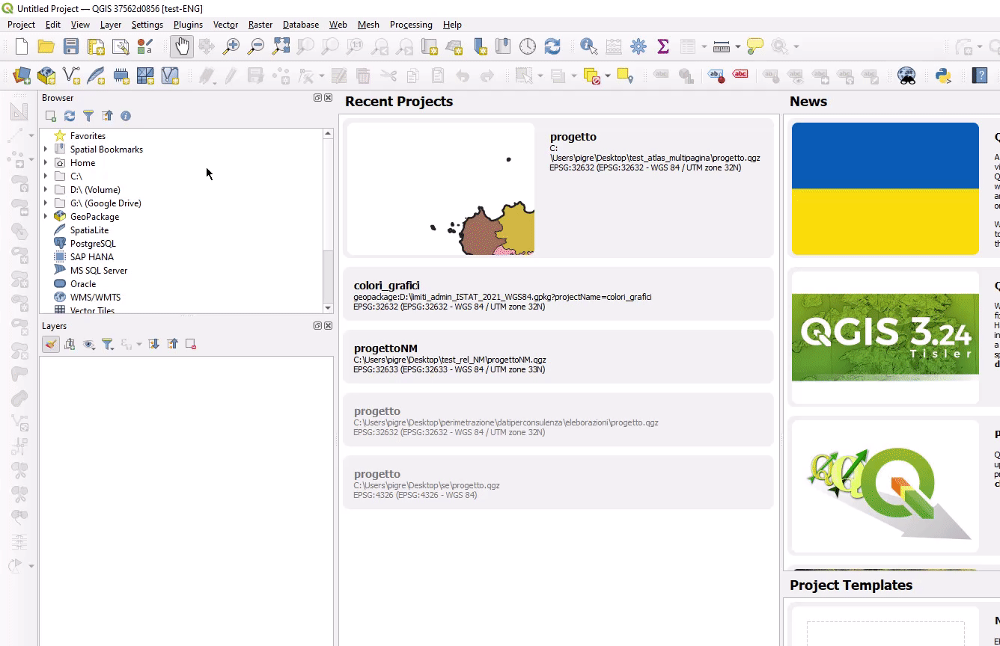
This feature was funded by City of Canning
This feature was developed by Nyall Dawson (North Road Consulting)
Feature: Optionally store layer edit state in projects¶
An opt-in setting has been added to project properties for “Remember editable layer status between sessions”. If checked, then any layers which are editable will be remembered when saving that project and immediately made editable whenever the project is restored to make it simpler for users who are making complex, data-editing focused projects to store their configurations on a project by project basis.

This feature was funded by City of Canning
This feature was developed by Nyall Dawson (North Road Consulting)
Feature: Project style databases support¶
A new feature allows users to set a list of QGIS style databases for a project. This allows projects to link to multiple style databases, and then show all symbols and entities from those databases in the layer styling interface.
The style paths can point to style .db databases or .xml exports. When a project is loaded, symbol and label style selectors will show ALL symbols from ALL styles linked to the project. Additionally, every project now has a project-specific style database (which is stored alongside the project), for storing project-specific symbols, text formats, etc.
This functionality requires a QGIS build based on Qt 5.13 or later, and is hidden on older builds (e.g. on Ubuntu 20.04)

This feature was funded by the QGIS Swiss user group.
This feature was developed by Nyall Dawson (North Road Consulting)
Feature: Added setting to show feature counts by default for newly added layers¶
If enabled, this option will cause the feature count to be enabled for any newly added/created map layers. This setting will remain disabled by default.

This feature was funded by SevenCs GmbH
This feature was developed by Nyall Dawson (North Road Consulting)
Feature: Add a “Skip” option for custom environmental variables¶
The QGIS settings allow a particular user profile to modify the system environment variables for enhanced flexibility, in Settings –> Options –> Environment.
This functionality included options for “Overwrite”, “If Undefined”, “Unset”, “Prepend”, and “Append”, which allowed users to perform various functions from configuring credentials to extending their PATH variables.
A new “Skip” option is now provided which allows users to ignore values from an existing field, without losing the stored values or having to remove them from the settings to disable them.

This feature was developed by Andrea Giudiceandrea
Feature: Revamped projects’ default symbols, color ramp, and text format¶
This new version of QGIS has revamped the way default projects symbols are handled, aiming at upgrading its UI/UX as well as behaving correctly in multi-user environments. The changes include:
Projects’ default symbols and color ramps are now stored as symbology XML rather than references, improving portability and integration with external applications and services
A new project-level default text format setting has been added to allow user defined configuration of the default project font for newly-added vector layers
The user interface has been upgraded to make use of QGIS’ symbol and color ramp buttons

This feature was developed by Mathieu Pellerin
Profile Plots¶
Feature: Elevation profile plotting tool¶
QGIS now includes a native elevation profile plotting tool.
The tool includes the following features:
Support for vector, raster, mesh, and point cloud layers, based on the corresponding layer’s elevation settings.
Drawing profile lines interactively using a map tool, which supports snapping, tracing, stream digitizing and curves
Picking an existing line feature to use as the profile line. When this tool is active, users can click any line feature on the map to generate a profile curve along that line. If multiple features are present at the clicked point then a popup menu will appear allowing users to select from the available features.
Plots can be exported to PDF (as high quality vector objects) or various image formats
Profiles are rendered using standard QGIS line symbols, and so include support for advanced design and configuration, including support for geometry generators and paint effects.
Measuring distances on the plots
Identifying features in the plot via either a single click, or click-and-drag rectangle. Results are shown in the standard identify results dock, and support vector, raster, mesh, and point cloud layers.
Interactive navigation of the plot canvas is supported using the standard QGIS pan/zoom shortcuts, such as:
Middle mouse button: Pan
Space: Pan
Ctrl + Space: Zoom
Ctrl + Mouse wheel: Fine zoom
Shortcuts are available for nudging the elevation profile curve left and right, which allows users to “scrub” the curve across the map frame and find the optimal profile line. The step distance is set to match the chart’s tolerance distance, so that a single step will result in a different set of point and point cloud features shown in the chart.
Keyboard shortcuts for nudging are:
Ctrl+Alt+,: Scrub left
Ctrl+Alt+.: Scrub right
For more information on this awesome feature and framework, be sure to watch the QGIS Elevation Profiles Deep Dive presentation on YouTube.
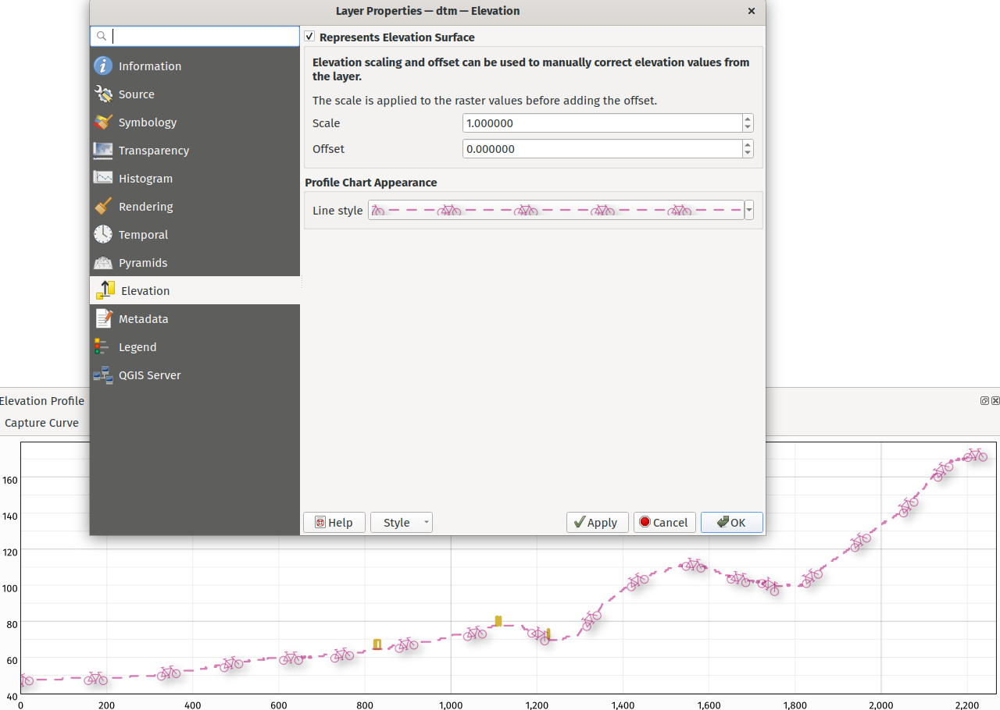
This feature was funded by Crowdfunding for raster and point clouds improvements
This feature was developed by Nyall Dawson (North Road Consulting)
Feature: Flexible vector layer symbology in elevation profiles¶
Vector layers added to profile charts will default to respecting their layer symbology. A checkbox has been added to disable this in the layer elevation properties.
This means that vector results in elevation profile charts will default to showing features using their corresponding 2D renderer, so custom styles such as categorized classes will be visible on the profile chart by default.
There’s also options to change the interpretation of the elevation profile for vector layers. By default, the elevation profile tool will use an “individual features” option, which samples discrete positions where the cross section profile line intersects the vector features. There’s also a “continuous surface” option which will generate an interpretation of the surface by interpolating across the sample positions for enhanced visualization, such as the production of a continuous surface line from contour lines or surveyed elevation points.
Additional rendering capabilities are provided for the “continuous surface” interpretation option, such as a “fill below” symbol style. This can be easier to interpret in some cases, and helps match expected symbology conventions in certain disciplines.

This feature was funded by Crowdfunding for raster and point clouds improvements
This feature was developed by Nyall Dawson (North Road Consulting)
Feature: Flexible symbology for point cloud profile plotting¶
Point cloud layers in profile charts include the following symbology features:
Single color display of points or a setting to inherit classification and coloring from the 2D symbology (e.g. RGB colors)
Respecting the profile curve distance tolerance setting
Option to reduce the opacity of points which are further from the profile curve
Automatic refinement based on plot visible area and scale, with a user controllable max screen error
Control over appearance of points (color, size and shape)

This feature was funded by Crowdfunding for raster and point clouds improvements
This feature was developed by Nyall Dawson (North Road Consulting)
Feature: Vector feature extrusion for profile charts¶
The elevation profile tool provides support for vector feature extrusion and offset heights for incorporation of 2D vector in profile charts. These propertied can be data defined, and will also be used as the default offset/extrusion settings for any new 3D polygon symbols created for that layer.
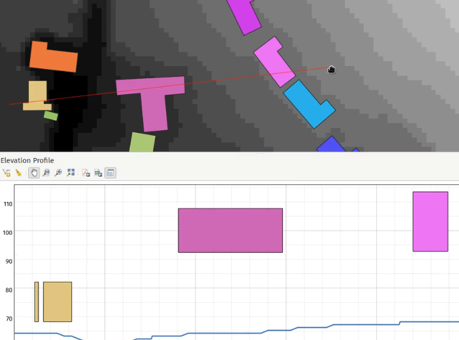
This feature was funded by Crowdfunding for raster and point clouds improvements
This feature was developed by Nyall Dawson (North Road Consulting)
Browser¶
Data Providers¶
Feature: Support reading ESRI vector tile packages (.vtpk) files directly¶
ESRI vector tile packages (VTPK files) can now be opened directly as vector tile layers via drag and drop, including support for style translation.
This feature was funded by North Road Consulting, thanks to SLYR
This feature was developed by Nyall Dawson (North Road Consulting)
Feature: SQL Logging in the Debugging/Development panel¶
The debugging/development panel now includes support for logging the SQL queries made by QGIS to backend data providers.
This provides an effective method of debugging algorithms and data providers, as well as capturing the SQL statements made to perform specific actions against particular providers.
Note that this is specifically designed to be used as a debugging and development tool and is not designed to be a replacement for any logging capabilities on the backend databases systems.
This has been implemented in line with QEP 242.

This feature was developed by Alessandro Pasotti
QGIS Server¶
Feature: Alternate periodic check strategy for detecting project updates¶
QGIS Server now provides an alternate lastModified() strategy for invalidating the internal project cache, addressing concerns about the ability of QGIS server to invalidate the cache when a project file is updated on atypical file systems, such as NFS, or when the project file is stored in a database system like PostgreSQL.
An asynchronous periodic check strategy using the last modified value of a project is now provided for checking project configuration for changes.
The QGIS_SERVER_PROJECT_CACHE_STRATEGY environment variable may be used to configure the server caching strategy using the following values:
periodicfor the alternative strategyfilesystemto use the file system watcher strategyoffto disable internal caching completely.
QGIS_SERVER_PROJECT_CACHE_CHECK_INTERVAL is used for controlling the periodic strategy interval.
The QFileSystemWatcher strategy remains the default configuration.
This feature was funded by 3Liz
This feature was developed by David Marteau
Feature: Add more server highlight label parameters¶
New parameters have been added to better control the placement of highlight labels on the WMS server, including:
HIGHLIGHT_LABELDISTANCE: Distance between the feature and the label, defined in mmHIGHLIGHT_LABELROTATION: Label rotation, defined in degreesHIGHLIGHT_LABELVALI: Vertical alignment for placing the label directly on a pointHIGHLIGHT_LABELHALI: Horizontal alignment for placing the label directly on a point
This feature was developed by mhugent
Feature: Temporal properties support for WMS Server¶
Prior releases of QGIS Server only provided support for the dimensions of time and elevation for vector layers and provided no integration with the updated temporal properties API provided by QGIS.
QGIS Server has now been extended to support the time dimension in the GetCapabilities response for WMS services, and accept a TIME query string parameter which provides capacity for temporal data filtering.
Parsing time values will be performed with the implementation specification provided by OGC API - Features (OAPIF) and use the following structure:
| interval| syntax | |—|—| | interval-closed | date-time “/” date-time | | interval-open-start | [“..”] “/” date-time | | interval-open-end | date-time “/” [“..”] | | interval | interval-closed / interval-open-start / interval-open-end | | datetime | date-time / interval |
Note that this filtering applies to single values only, and a list of instants or ranges is not currently supported.
To prevent conflict with existing TIME dimension stipulations on legacy projects, if a TIME dimension was explicitly defined for a vector layer, the temporal properties for that layer will not be activated and the explicitly set TIME dimension will be considered instead.
This feature was funded by Gis3W
This feature was developed by Alessandro Pasotti
Programmability¶
Feature: Add a QgsScaleCalculator function to calculate canvas width from a given extent, scale, and dpi¶
A new calculateCanvasWidth( extent, scale ) was added to the QgsScaleCalculator class to derive canvas width in pixel unit when providing an extent, a scale, and a DPI.
This feature was developed by Mathieu Pellerin
Feature: Clear current symbol action in symbol button widget¶
A set to null / clear current symbol action has been added to clear the current symbol attached to a symbol button widget.

This feature was developed by Mathieu Pellerin
Notable Fixes¶
Bug fixes by Even Rouault¶
Bug Title |
URL Issues (if reported, Github) |
URL Commit (Github) |
3.22 backport commit (GitHub) |
|---|---|---|---|
WFS provider doesn’t recognize CRS strings other than OGC URNs |
N/A |
||
QgsMapCanvas::showEvent access violation / QGIS crash |
|||
[GDAL provider] Minimal support for GDT_Int64/GDT_UInt64 of GDAL 3.5.0 |
(not reported) |
||
access to QgsRubberBand-methods crashes QGis |
|||
annotationManager with access to canvas-items crashes QGis |
|||
Can not import excel File with new version of QGIS |
N/A - freexl bug. Patch submitted to upstream |
N/A |
|
Layers added by QGIS are not correct if datasource is a collection |
|||
SQLite: No Spatial Index Creation though QGIS misleadingly reports success |
|||
Saving a large edited point layer takes far too long |
|||
Non-existent but registered attribute table in GPKG is added as empty table |
Not appropriate |
||
Accents displayed incorrectly when saving metadata to geopackage |
|||
Raster tiles are clipped based on the gpkg_contents bounding box of a GeoPackage |
Not a bug |
||
Pan-action freeze after use of middle mouse button and ‘copy coordinate’ |
|||
New GeoPackage layer cannot be loaded (QGIS thinks it’s invalid but it isn’t really) |
|||
[regression] New filter for duplicated WFS layer is also applied on source layer |
N/A |
These bugfixes were funded by QGIS.ORG (through donations and sustaining memberships)
Bugs fixed by Even Rouault
Bug fixes by Alessandro Pasotti¶
Bug Title |
URL Issues (if reported, Github) |
URL Commit (Github) |
3.22 backport commit (GitHub) |
|---|---|---|---|
@project_keywords are no longer tested on Rule based filters |
Not a bug |
||
No more styles after duplicate layer and change filter in query builder in 3.22.6 |
Works for me on 3.24.2 and master |
||
MSSQL Add Connection Dialog never enables OK button |
Works for me on master |
||
Highlight of identified feature not displaying correctly on “geometry generator” marker from different CRS |
TODO |
||
Cannot past copied features as temporary scratch layer |
TODO |
||
QGIS crash by opening a form with relation content |
TODO |
||
Relation reference widget: filter expression does not work with variables |
TODO |
||
Random order of attributes in oracle feature query |
no |
||
CSV datasource not converted from 3.16 to 3.22 correctly - projects not usable anymore |
Works for me on 3.24 and master |
||
Documentation doctest failure |
no |
||
“Add to group” option in sub layer window always add at top of layer tree |
no |
||
Name/id of map objects in GetProjectSettings follows an order that is the inverse of the order used to add the map objects in a layout |
no |
||
Aborted inserts in Postgis geometryless tables are saved anyway |
no |
||
Inconsistent coordinate rounding in Raster “Layer Properties” |
TODO |
||
Drag and Drop Postgis-Table in QGIS Browser alters name of Geometry-Column |
no |
||
Layer filter does not work on multiline strings values with linebreaks |
no need |
||
QGIS Crashes while searching in the expression builder |
|||
Server GetPrint with multiple maps following map themes apply prefixed LAYERS (map0:LAYERS) to all maps |
TODO |
These bugfixes were funded by QGIS.ORG (through donations and sustaining memberships)
Bugs fixed by Alessandro Pasotti
Bug fixes by Alex Bruy¶
Bug Title |
URL Issues (if reported, Github) |
URL Commit (Github) |
3.22 backport commit (GitHub) |
|---|---|---|---|
QgsProcessingParameterMultipleLayers adds an extra list element when reordering inputs |
Works for me on 3.24 and master |
||
GDAL Vector to Raster (gdal_rasterize) fail to produce ESRI ASCII as output |
Not a bug |
||
Processing: Drape / qgis:setzfromraster inconsistent NODATA behaviour |
Works for me on master |
||
Algorithm output node is placed half outsize model canvas |
|||
Inconsequence in CRS-names/id’s in Copy Coordinate in MapCanvas |
|||
QGIS Batch Mode Populating Form are producing gaps between rows |
|||
Processing settings dialog cleared after a search is done in Settings dialog |
|||
QgsProcessingAlgorithm with FlagHideFromModeler flag is still visible in the Model Designer |
|||
Batch Nominatim Geocoder output directly saved to file has no CRS |
|||
Iterating over features in processing algorithm not creating correct destination folder |
|||
Dragging multiple layers in processing algorithm layer selection widget crashes QGIS |
These bugfixes were funded by QGIS.ORG (through donations and sustaining memberships)
Bugs fixed by Alex Bruy
Bug fixes by Sandro Santilli¶
Bug Title |
URL Issues (if reported, Github) |
URL Commit (Github) |
3.22 backport commit (GitHub) |
|---|---|---|---|
Add simple bash script to run tests as done by CI |
Not appropriate |
||
test_provider_eptprovider occasionally aborts |
not needed |
||
Issue with QgsVectorLayerUndoCommand class (QGIS crashes) |
|||
Check that source files are not overridden |
Not appropriate |
||
TestQgsGdalProvider failures in absence of netcdf support |
|||
test_core_gdalprovider modifies tests/testdata/zip/landsat_b1.zip source file |
|||
Drop gpkg_metadata_reference_column_name_update trigger generated by GDAL < 2.4.0 |
N/A |
||
Fix test analysis processing modification of source files |
|||
ctest: No module named ‘qgis.server’ |
|||
PyQgsLocalServer test fails: AttributeError: module ‘platform’ has no attribute ‘dist’ |
|||
Fix old GDAL triggers in geopackage files |
N/A |
These bugfixes were funded by QGIS.ORG (through donations and sustaining memberships)
Bugs fixed by Sandro Santilli (strk)
Bug fixes by Nyall Dawson¶
Bug Title |
URL Issues (if reported, Github) |
URL Commit (Github) |
3.22 backport commit (GitHub) |
|---|---|---|---|
layer_property(…, ‘path’) should work for all layer types |
|||
Improve UX for virtual layer creation dialog |
unreported |
Not appropriate |
|
[db manager] Don’t load preview layers into project |
|||
Don’t hang when an error occurs while trying to build a virtual layer |
Too intrusive |
||
Don’t offer non-vector layer providers as options for virtual layer |
Too intrusive |
||
Fix selecting/deselecting all in offline editing dialog when some layers are in unchecked groups |
|||
Fix hovering features in attribute table in dark themes selects them |
|||
Fix atlas expression context is not available when rendering item overview frames |
|||
Fix regression where layout attribute table conditional styles don’t apply |
|||
Review and finish open PR PR #48314 |
|||
Fix geometry based expression attributes for diagrams |
|||
Fix loss of precision when an extent is manually entered in processing extent widgets |
|||
Fix some undersized icons on hidpi displays |
unreported |
Not appropriate |
|
Make atlas coverage layer available to expression builder for custom grid format |
|||
Fix regression where user defined default style doesn’t apply to MapInfo TAB files |
|||
Fix picking values from QgsFeatureListComboBox |
|||
Fix clear values for offset along line spin boxes |
unreported |
||
Fix ambiguous “show all labels” setting and address regressions in label when this setting is misinterpreted |
Too intrusive |
||
Main annotation layer should follow project crs unless it has items added |
Too intrusive |
||
Fix some misleading warnings about transformations for non-earth crs |
Too intrusive |
||
Never show the transformation selection dialog for the first layer added to a project |
unreported |
||
Ensure layer level expressions work correctly for diagrams |
|||
Fix handling of WMTS sources with dimensions in browser |
|||
Ensure that all units are changed when setting output unit for a symbol |
|||
Fix loss of mesh layer styling when fixing a broken path to a mesh layer |
unreported |
||
Show pinned label highlights also for pinned curved labels |
N/A |
||
Don’t hide parts of the mesh renderer widget if the layer is invalid |
unreported |
||
Add layer opacity widget in mesh layer renderer properties widget |
unreported |
||
Review and finish open PR PR #44941 |
|||
Fix a crash when QgsProject::instance() is accessed when no QgsApplication exists |
unreported |
N/A |
|
Better approach to filtering lists by tags which works across different styles |
N/A |
||
Fix slow layout view when atlas is enabled with legend filter enabled |
|||
Fix crash after running model from history dialog |
|||
Fix crash on QGIS exit |
likely solves a number of open tickets, but needs end user confirmation |
Too intrusive |
|
Add support for map field types to memory provider, avoid data loss in models/processing |
unreported |
Too intrusive |
|
Fix crash when convertng a curved geometry to curves |
|||
Fix many memory leaks |
unreported |
N/A |
|
Fix ctrl modifier scrolling on symbol buttons |
unreported |
N/A |
These bugfixes were funded by QGIS.ORG (through donations and sustaining memberships)
Bugs fixed by Nyall Dawson